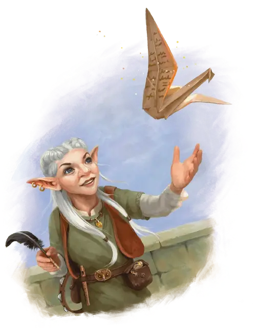

Бумажная птица
Paper Bird
Чудесный предмет, необычный

Рекомендованная стоимость 101-500 зм
Как только вы напишете сообщение длиной в 50 слов или меньше на этом волшебном листке бумаги и произнесёте имя существа, листок магическим образом сложится в Крошечную бумажную птицу и полетит к адресату, чьё имя вы произнесли. Адресат должен быть на том же плане существования, что и вы, иначе во время полёта птица обратится в пепел.
Птица является объектом с 1 хитом, скоростью полёта 60 футов, и с КД 13. Птица имеет 16 (+3) Ловкости, а значение всех других характеристик равняется 1 (-5). Кроме этого, она невосприимчива к урону ядом и психической энергией.
По кратчайшему пути она долетает до адресата и в пределах 5 футов от него превращается в немагический и неодушевлённый листок бумаги, прочитать который может только адресат. Если хиты птицы или её скорость опускаются до 0, или её обездвижат иным способом, она обращается в пепел.
Бумажные птицы обычно хранятся в малых, плоских коробках, в которых содержатся 1к6 + 3 листков бумаги.